Imaging of the Surgical Abdomen - The Acute Abdomen.
Dr Alfred Odhiambo. Lecturer ; University of Nairobi.
Definition of an Acute Abdomen.
A group of conditions characterized by severe abdominal pain in which prompt surgical treatment must be considered to treat perforation, peritonitis, vascular or other intra-abdominal catastrophe
Principles of Imaging.
- The objective of imaging in the whole of the human body is to demonstrate structures not usually visible to the eye.
- Unlike in the chest where natural contrast is maximal abdominal contrast is limited.
- A soft issue opacity of 2 mm in the lung fields would stand out against air.
- In the abdomen a polyp 20 times that would easily be missed.
General Principles
- Role of the radiologist - help the surgeon decide if surgery is indicated
- If immediate surgery indicated on clinical findings, negative radiology should be ignored
The Tools of the Trade.
- Plain film.
- Sonography.
- Barium studies.
- Nuclear medicine.
- CT.
- MRI.
- IVU.
The Plain Abdominal Radiograph (AXR)
Often the most useful initial investigation
Interpretation depends on the gas patterns
Specific diagnosis is possible in many cases
Objectivity is improved by viewing r/g initially in the absence of any clinical info.
Choice of Radiograph
Influenced by clinical suspicion & patient's ability to stand
Supine abdomen = most useful single r/g. In some conditions, e.g. Renal colic, it may be adequate alone.
Erect CXR = best film for free intra-abdominal gas
A Horizontal Ray AXR
- adds information: fluid levels/ free gas.
- It's either Erect PA or LL decubitus (interpretation difficult ??)
- Exposures are optimal for picking Pneumoperitoneum
- Acute abd. Mimics may be suspected on CXR: ✓ LL pneumonia, Pulm. infarction, pleurisy ✓ aortic dissection/leaking aneurysm, ✓ MI, CCF, pericarditis ✓ Pneumothorax
- Some abd. Dx have chest complications, eg. Pleural effusion often complicates acute pancreatitis
- Baseline CXR - chest complications and subphrenic abscesses are frequent post-op complications
Supine AXR
- Distribution of gas
- Calibre of bowel
- Displacement of bowel by soft tissue masses
- Obliteration of normal fat lines - eg. Psoas outlines, properitoneal fat line
LL Decubitus
Best for pneumoperitoneum in patients who cant stand Best for showing a dilated gas-filled duodenal loop in suspected acute pancreatitis
Dorsal Decubitus
May show calcification in an aortic aneurysm not detected on the supine view
Normal Appearances
- Amount of gas in SB is small. Only short lengths of it are seen
- Valvulae conniv. Are rarely seen
- 3 - 5 fluid levels <2.5 cm long are normal
- 3 or more fluid levels >2.5 cm are abnormal (ileus/obstruction)
- Colon contains gas - haustra are readily identified
- Colonic fluid levels of several cm in left colon are normal
Normal Appearances Ctd.
S/bowel Rule of 3:
- Wall thickness < 3 mm
- Valvulae conn. < 3 mm wide
- Caliber < 3 cm
- Air fluid levels < 3
Bowel Calibre Limits; Rule of 3:
- Small bowel 3 cm
- TRV colon 6 cm
- Caecum 9 cm
Mechanical Obstruction (GOO)
Causes:
Duodenal or pyloric canal ulceration Extrinsic compression, eg. Ca pancreas
Huge fluid filled stomach occupies most of the abdomen
AXR - large soft tissue mass w. little or no bowel gas beyond it
A little stomach gas is usually present allowing identification
Acute Gastric Dilatation (AGD)
Frequently occurs in old people
Associated w/ fluid and electrolyte imbalance High mortality
Causes:
Post-op
Trauma
Inflammatory conditions - peritonitis, pancreatitis, cholecystitis
Diabetic or hepatic coma
Gastric Volvulus
Abnormal rotation of one part of the stomach around another part
Relatively rare. Causes severe epigastric pain & wretching
Most common in the elderly; may occur at any age
In most, stomach is at least partially herniated into thorax - Associated with para-oesophageal hiatus hernia or eventration.
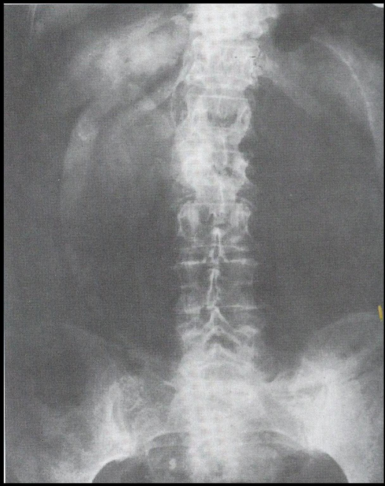Gastric Volvulus: Supine Mesentero-axial Type Intramural Gas Rigler's Sign
Perforated Gangrenous Stomach Found At Laparatomy
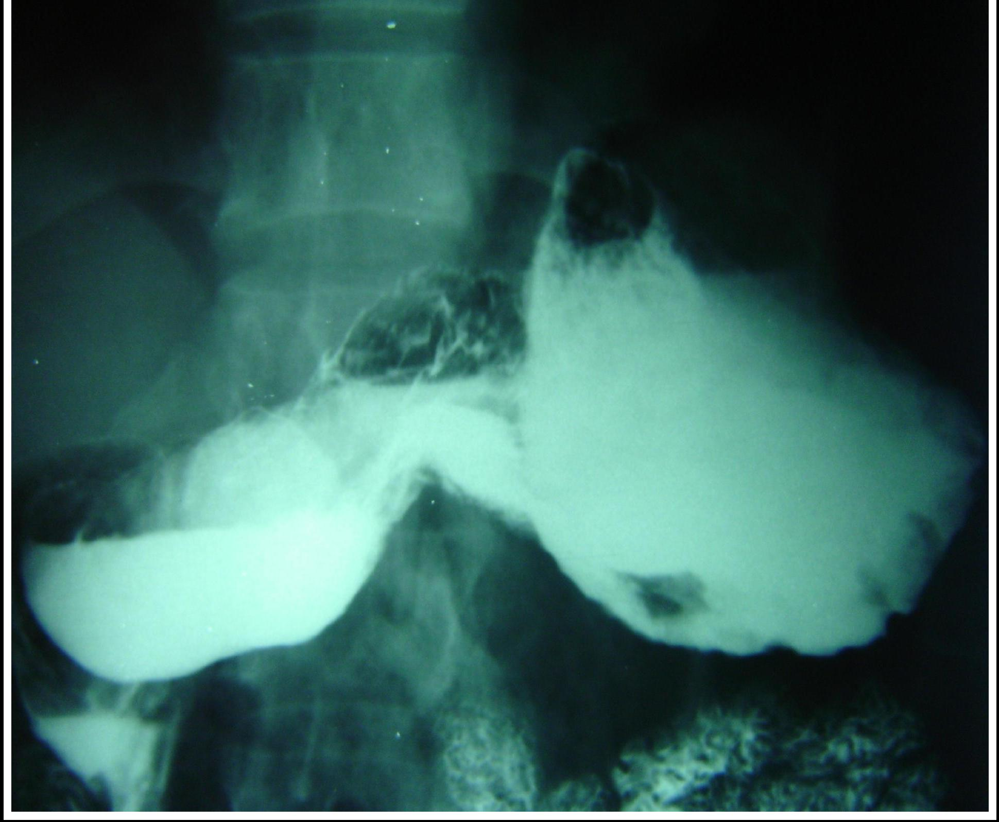Gastric Volvulus (Lib)
Distinguishing Small & Large Bowel Dilatation
Small Bowel
No Haustra
Valvulae conniv. Seen in jejunum
Many loops
Centrally located
Small radius of curvature
Small calibre: 3-5 cm
No solid faeces
Large Bowel
Haustra present
No valvulae conniventes
Few loops
Peripheral location
Large radius of curvature
Large callibre: usually > 5cm
Solid faeces present = best sign
Small Bowel Obstruction (SBO)
Africa : strangulated hernia = commonest cause (75%)
West : > 75% from adhesions
Other Causes:
- Luminal: gallstones, parasites, intussusception
- Intramural: tumours, TB, strictures (Radiotherapy)
- Extrinsic: abdominal masses, volvulus
SBO: Supine
- multiple loops
- valvulae
Large bowel not distended
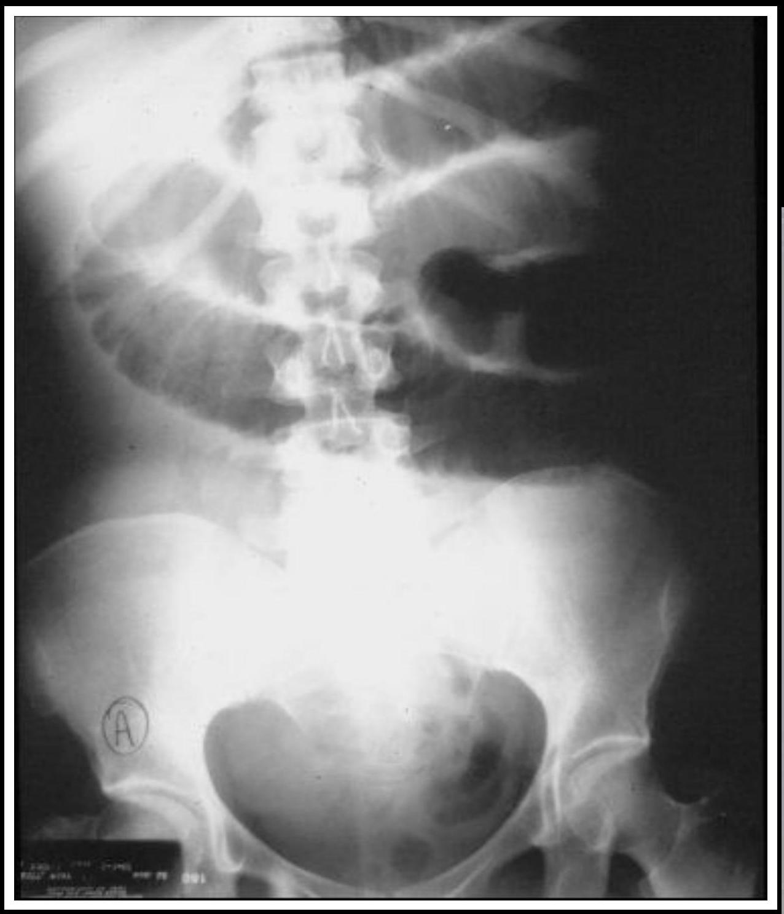SBO
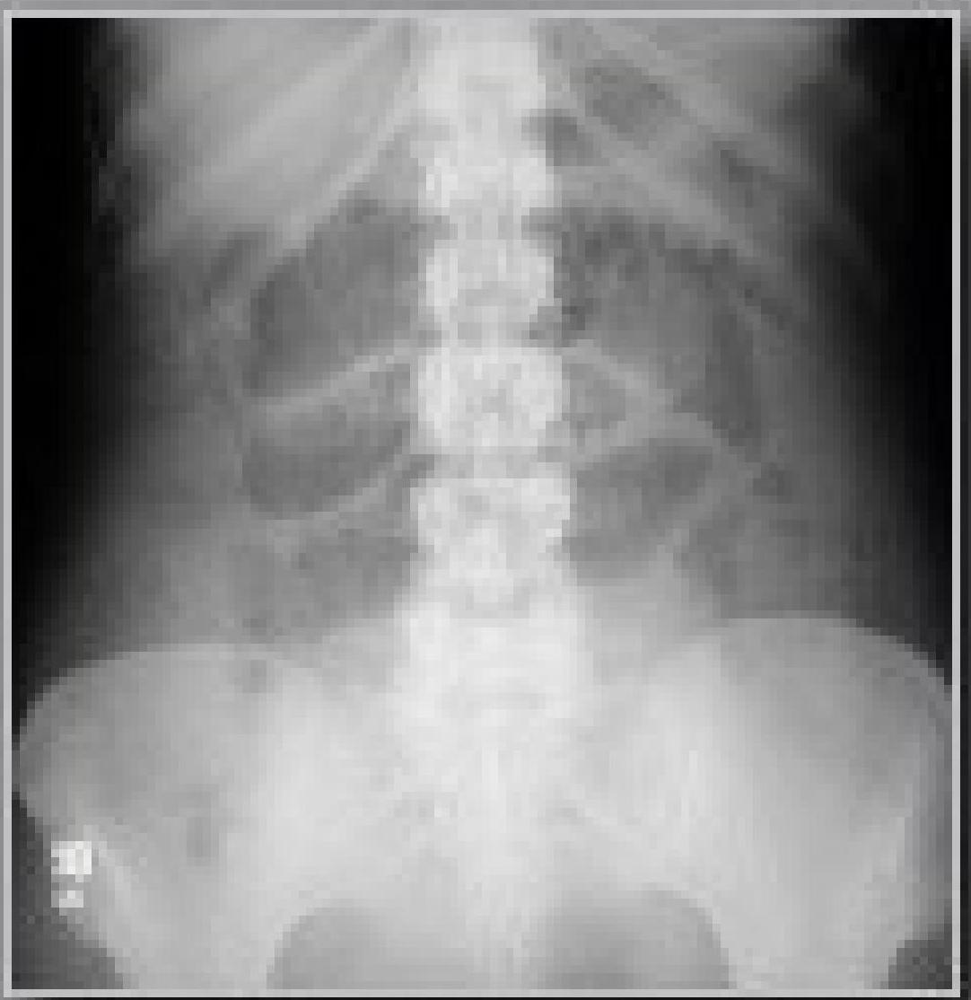S/bowel Fluid Levels
Causes of Small Bowel Fluid Levels
Small or large bowel obstruction Paralytic Ileus
G/Enteritis
Cleansing enemas
Uraemia
Mesenteric thrombosis
Peritoneal metastasis (usually <25mm long)
(SBO should not be diagnosed on the basis of fluid levels alone)
Small Bowel Obstruction (SBO)... Ctd
String of beads sign - virtually diagnostic of mechanical SBO. (gas bubbles trapped b/w valvulae in very distended almost completely fluidfilled s/bowel)
Initial AXR may be normal or equivocal, especially in high jejunal obstruction with vomiting. Films taken a few hrs later are often diagnostic.
If not, barium study or CT is done. Barium is safe due the large amount of fluid present.
SBO: Erect
- String of beads sign
US Rt. Flank in SBO:
Dilated hypoperistaltic fluid filled loops
- CT may have a role if - AXR equivocal - partial obstruction - conservative management is planned (to avoid missing strangulation)
CT shows:
- Dilated loops ( >2.5 cm ) (3cm mid ileum, 3.5 prox. Jejunum)
- Site and level of obstruction
- State of mesentery
- Intra- or extraluminal masses
- Presence of ascites
- Presence of strangulation
CT overall accuracy in SBO is 95%.
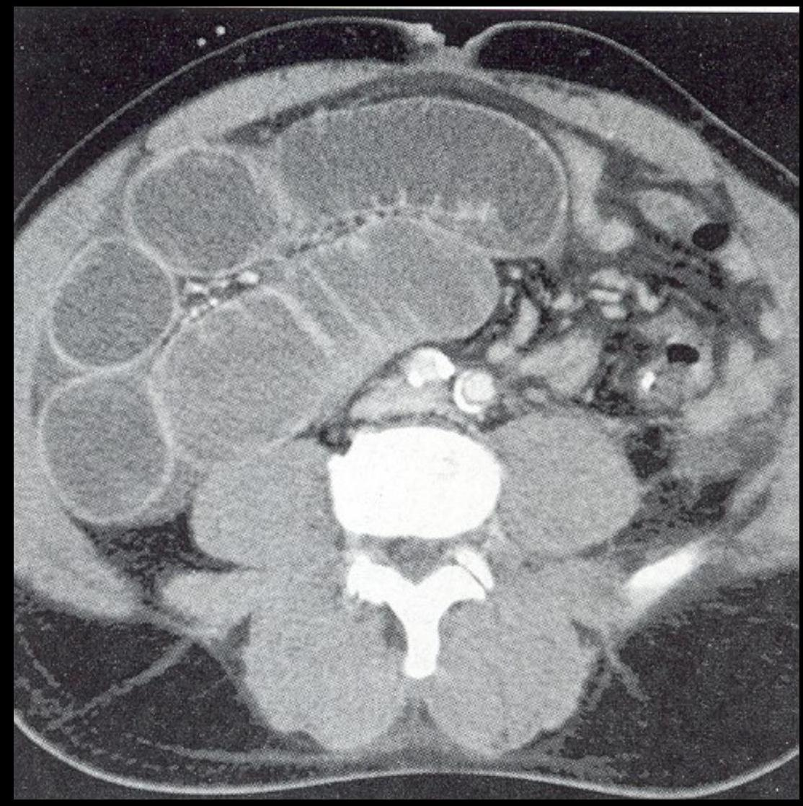SBO on CT
- Cause was adhesions
SBO: Strangulating Obstruction
2 limbs of a loop are incarcerated by a band or in a hernia
Blood supply is compromised
Loop may fill with fluid ⇒ mass or pseudotumour on AXR
Loop may fill with gas ⇒ coffee bean appearance on AXR
Gallstone Ileus
2% of SBO. Typically, middle aged women
Stone erodes through inflamed GB wall into duodenum, rarely into the colon
Impacts in terminal ileum (rarely in duodenum, colon)
50% have radiographic signs of SBO (usually with large fluid: gas ratio)
Gallstone Ileus: Supine
- Abd. pain & vomiting 5 days
- Gas in CBD
Intussusception
Telescope-like invagination of bowel into lumen of more distal bowel. (Intussusceptum into intussuscipiens)
Presents with pain, vomiting, blood in stool & a palpable mass. Diagnosis usually made clinically.
= 2nd commonest cause of acute abd. in child after appendicitis
Most common 3 months to 2 yrs
Child over 3 yrs - think lymphoma
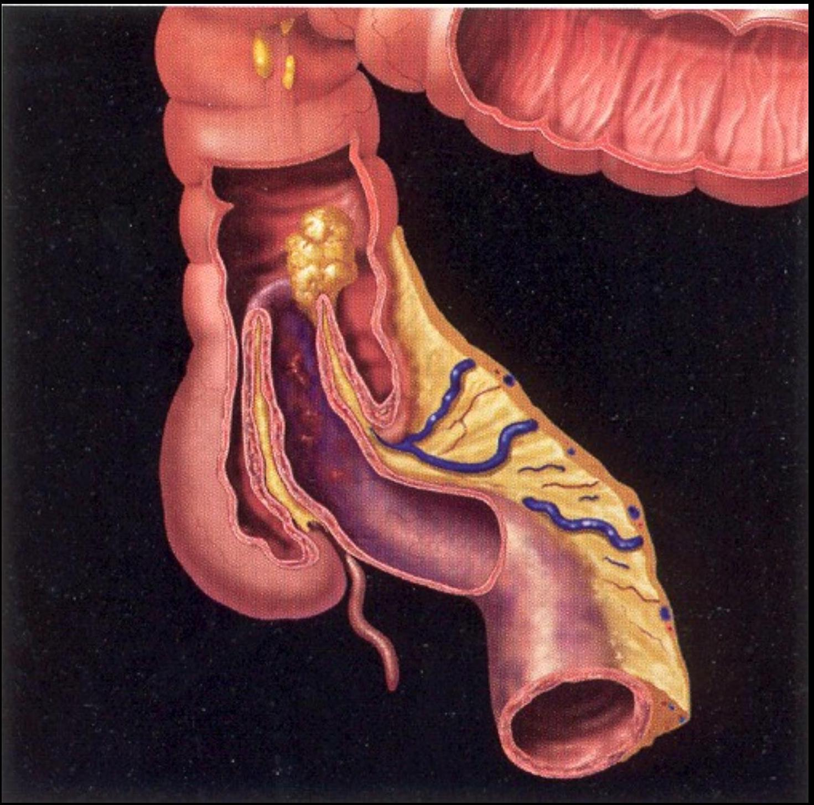Ileocolic Intussusception
Cause: polypoid mass in terminal ileum
Intussusception Ctd.
Adult Intussusception: Accounts for 5% of all intussusception cases.
20% are idiopathic; 80% have known causes:
- Tumour - 50%
- Surgery - 30%
- TB, typhoid
Accounts for < 15% of adult bowel obstruction.
lleoileal type commoner in adults (40%). Usually from small bowel benign tumours. Ileocolic 15%. The rest colocolic.
Bloody stool in the majority. Palpable mass in 50%.
Intussusception: Supine
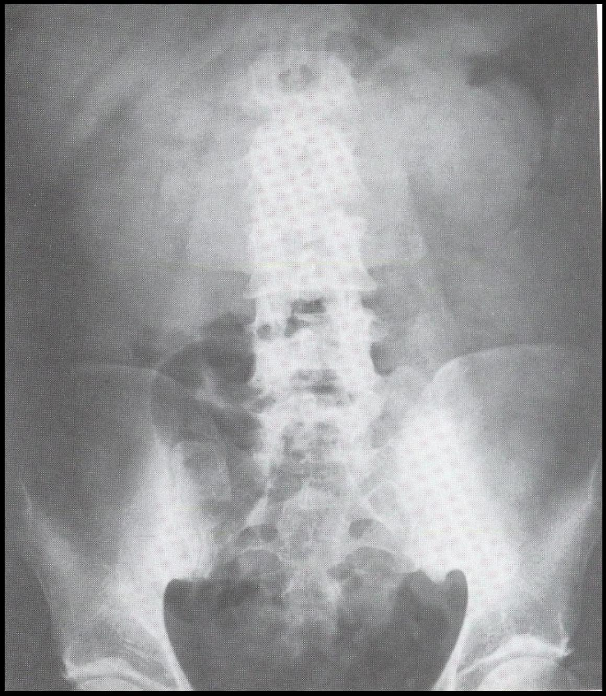- soft tissue mass across upper abd
- crescent of gas around head of intussusceptum
TRV US Scan
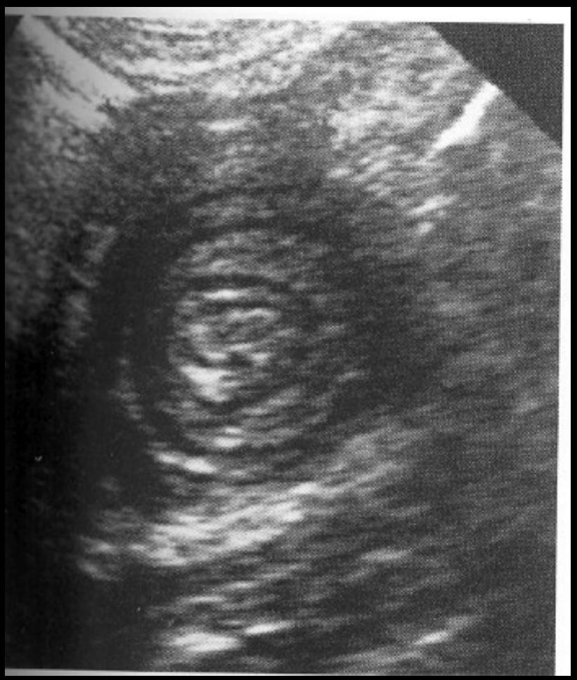 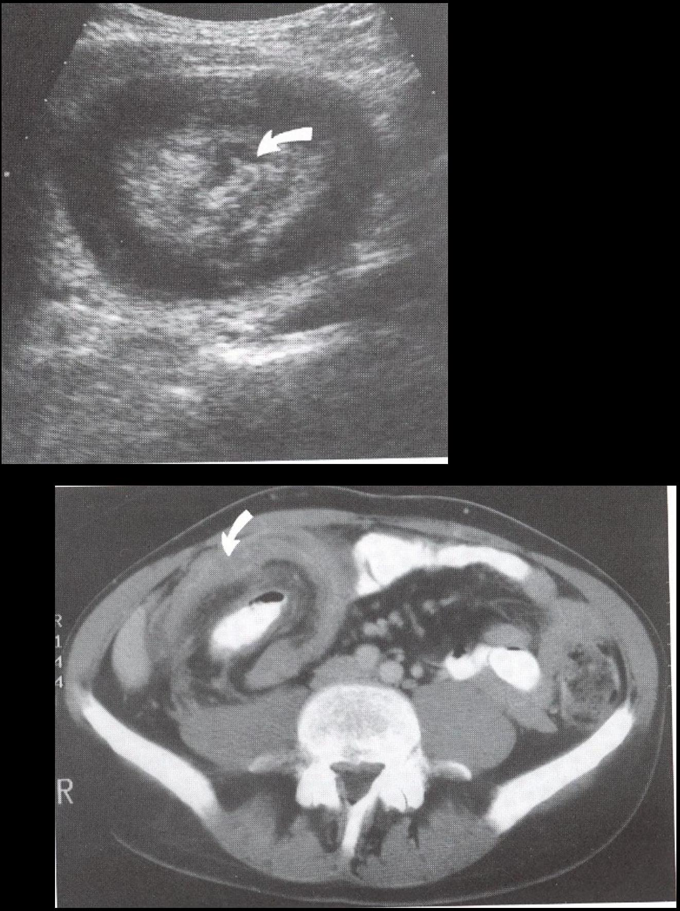Intussusception Following Ileocolic Lymphoma
US of RIF
- ileum surrounded by hyperechoic mesenteric fat inside thickened colonic wall
CT- Same Case
- oral contrast in ileal lumen in thickened ascending colon
Caecal Volvulus
1/3 of Colonic Volvulus (2/3 sigmoid; 4% TRV colon)
< 2% of adult intestinal obstruction
Caecum & Asc. Colon have to be on a mesentery (a congenital variant occurring in 11%).
30-60 yr olds
50%: caecum twists and inverts so caecal pole occupies LUQ
50%: caecum only twists, remains in RIF or Rt. Abdomen.
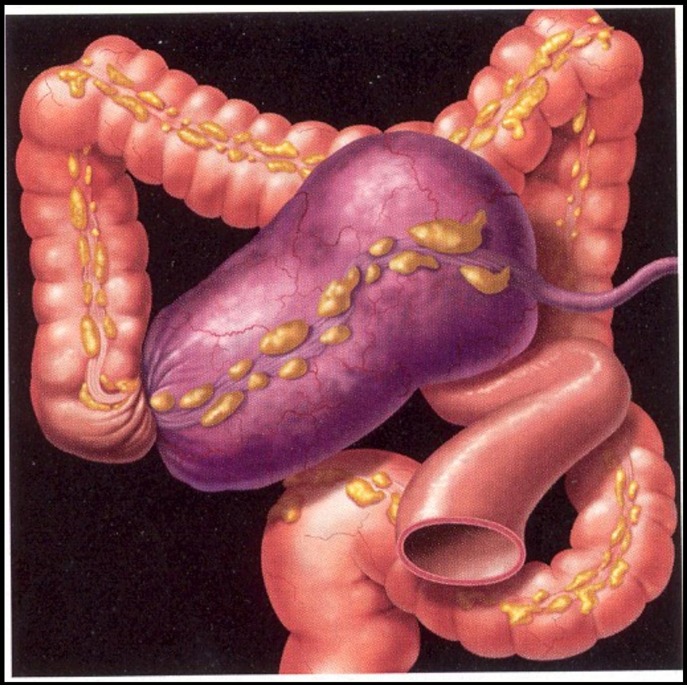Caecal Volvulus Characteristics
- Caecum dilates considerably but 1 or 2 haustra are still seen.
- Identification of attached gas-filled appendix confirms the diagnosis
- 50% develop mod. to severe small bowel distension
- Left colon is collapsed.
Sigmoid Volvulus
The elderly (>60), mentally ill or institutionalized most affected
Sigmoid loop twists around its mesenteric axis, usually counterclockwise
Typically chronic with intermittent acute attacks
In 1/3 it's difficult to differentiate from a dilated nonrotated sigmoid or dilated TRV colon looping down.
AXR in Sigmoid Volvulus
Massively distended inverted U-shaped loop
Ahaustral margin which overlaps:
- the lower border of the liver shadow → liver overlap sign
- the haustrated dilated desc. Colon → left flank overlap sign
- the left side of the pelvis → pelvic overlap sign
Apex above T10 and under left hemidiaphragm
Inferior Convergence on the Left side of the pelvis over upper sacral segments
Air: fluid ratio > 2:1
Sigmoid Volvulus: Supine.
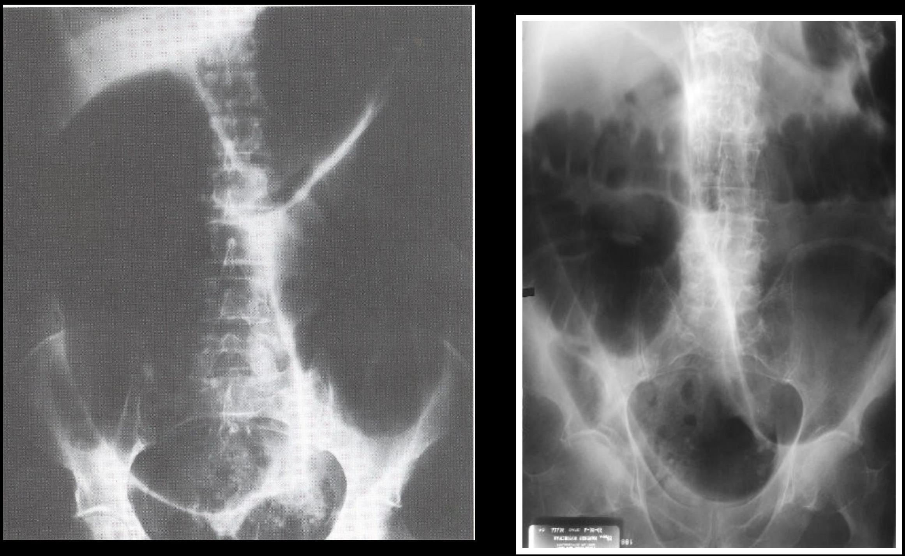Sigmoid Volvulus Contrast Enema
Contrast enema is done if AXR diagnosis in doubt:
- a curved tapering of barium, the bird of prey sign
- a corkscrew mucosal pattern at the point of twist
- in chronic volvulus, shouldering (wall thickening at twist site)
RX: - Decompress & stabilise with rectal tube - Complicated cases: Surgical resection. Mortality 25%
Ileosigmoid Znot
Rare. An abnormally mobile loop of small bowel forms a knot around the base of the pelvic colon
Abrupt onset, fulminant course, intense pain
AXR:
Dilated loop of pelvic colon, lies on Rt. side
Small bowel obstruction
Retained faecal matter in undistended proximal colon
Acute Colitis
Usually acute exacerbations of IBD. Ulceration is responsible for the major complications
AXR is useful to decide between medical and surgical management
Absence of (deep) ulceration and dilatation allows medical management
Areas with active colitis have no faecal residue
Coarse irregularity of the mucosal edge and absence of haustrations suggests marked ulceration
Acute Colitis: Toxic Megacolon
An acute fulminant form of colitis with: - transmural inflammation - neuromuscular degeneration - Extensive colonic dilatation
Usually occurs as a complx of - U.Colitis in 2-13% - Crohn's dx 2% or PMC.
Extensive and deep ulceration
Perforation and peritonitis are common. Ba Enema is c/i.
Age: 20-35y. Rx usually by colectomy. Mortality: 30%.
Acute Colitis: Perforation
Likely to occur during an acute attack of Ulcerative Colitis
Result of deep ulceration
Sigmoid = usual site
Free perforation ⇒ pneumoperitoneum (rare in Crohn's)
Sealed perforations are not detected reliably on AXR
Pseudo-Obstruction
Pseudo-Obstruction Ctd.
AXR:
Colon may be very dilated +/- small bowel dilatation
Large amount of bowel gas & fluid levels are present
Ba enema (or CT) is required to exclude true obstruction and avoid an unnecessary laparatomy
If caecal diameter exceeds the critical 9cm, caecostomy or Rt. colostomy is required to prevent perforation

PneumoPm: Signs on Supine AXR
RUQ gas - about ½ of patients have an oval or linear gas collection adjacent to the liver in: - the subhepatic space - Morrison's pouch - fissure for ligamentum teres (This is the commonest sign).
Rigler's sign - both sides of bowel wall visualised. (Requires 1000 ml of air) - WD
Triangular air - gas collections between loops of bowel
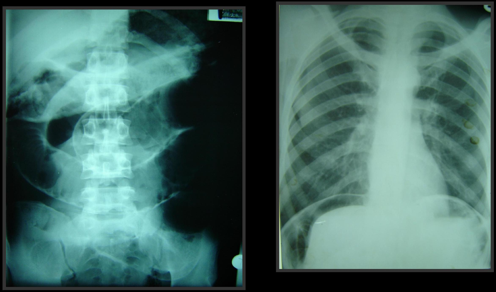Rigler's sign in perforated DU Erect CXR
Pneumoperitoneum: Mimics
Colonic interposition - Chilaiditi's syndrome. Commoner in ascites, cirrhosis, chronic lung dx .
Subdiaphragmatic fat - extension from post. pararenal fat - more laterally situated than air - constant position in decubitus views
Curvilinear supradiaphragmatic lung collapse - rare
Subphrenic abscess
Irregularity of left hemi-diaphragm
Cysts of pneumatosis intestinalis
Intraperitoneal Fluid
Commonly present in acute abdominal conditions
Even moderate amounts can be difficult to diagnose on AXR. (US far superior)
Pelvis = most dependent part on both supine and erect films
Earliest sign: Fluid densities (dog-ears) lateral to rectal gas shadow
Inflammatory Conditions
Acute appendicitis
Acute cholecystitis
Acute pancreatitis
Intra-abdominal abscesses
Appendicoliths
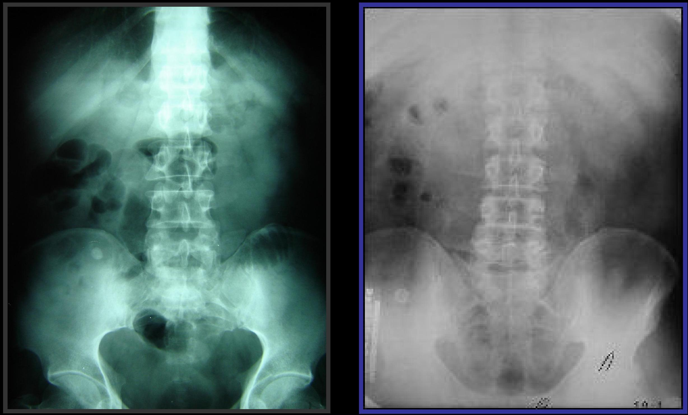US in Appendicitis
Graded compression technique displaces bowel loops
High frequency probe
Accuracy about 80-98% (GA).
False negatives occur with appendicitis of the tip, retrocaecal appendicitis, perforated appendicitis (compressible in 40-55%)
False + ve: dilated fallopian tube, periappendicitis, IBD, insipated stool mimicking an appendicolith
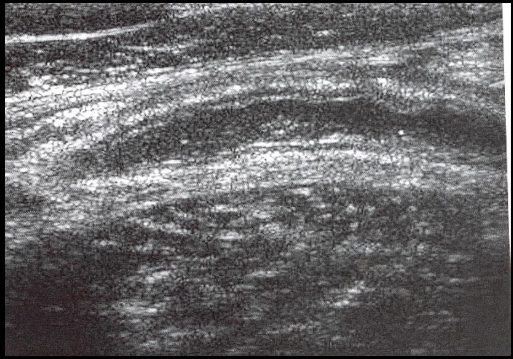Acute Appendicitis
Longitudinal and TRV Scans
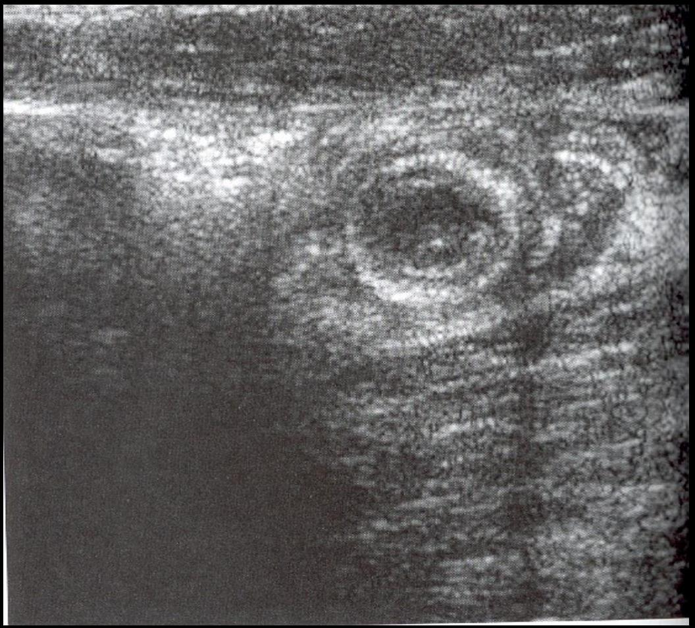Lumen is Distended With Fluid
Layers of Appendiceal Wall Still Visible
CT in Appendicitis
95% accuracy in confirming or excluding appendicitis (subspecialists)
Helical CT more accurate than conventional
Oral and/or colonic contrast improves accuracy
IV contrast is not essential
Normal appendix is seen on helical CT in 40% ( 5 mm slices)
FACT - 5 mm slices over abdominopelvic junction only (1/3 Radiation dose of abd CT)
Acute Cholecystitis
Acute inflammation of GB is typically due to calculus obstructing the cystic duct (95%)
85% disimpact spontaneously if stone < 3 mm
Peak age 40-60
3: 1 Female preponderance
Gallstones
False Gallstone: Confirm Acoustic Shadowing in 2 Planes
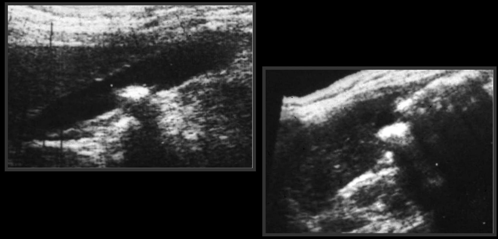 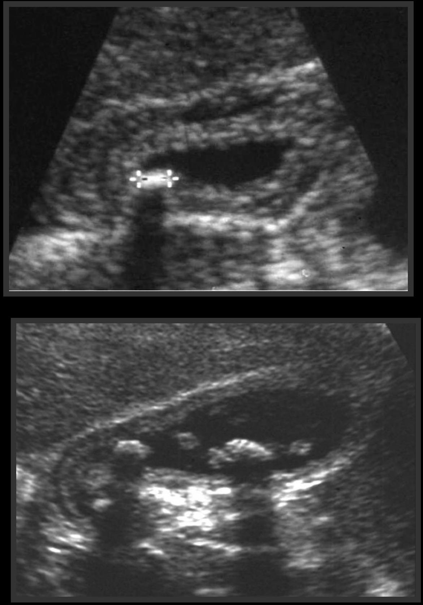 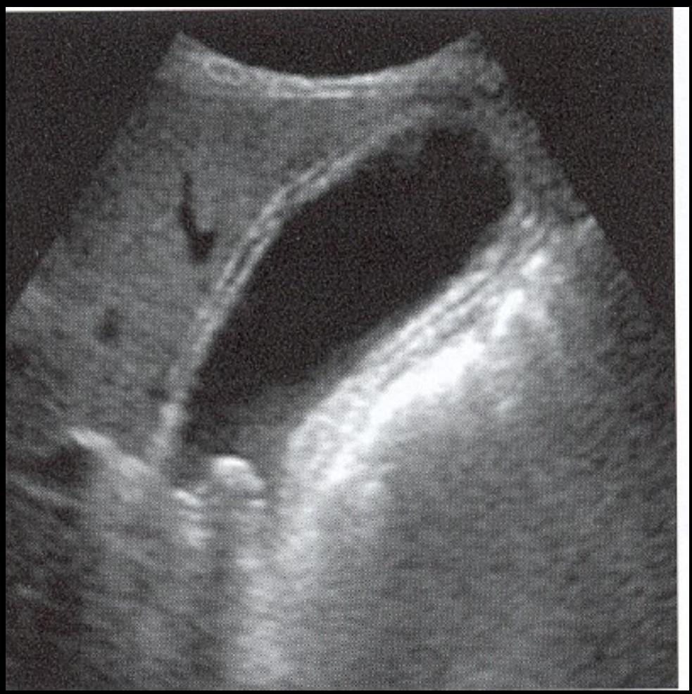CT: Acute Cholecystitis With Gallstone
- thickened GB wall
- Pericholecystic inflammation
Acute Cholecystitis Ctd...
RNI:
99mTc- HIDA (iminodiacetic acid) is a highly accurate diagnostic test.
Demonstrates blockage of the cystic duct. Diagnostic when GB not seen after 4 hrs .
False +ve occur in malnutrition and parenteral nutrition
Acute Pancreatitis
Most cases relate to gallstones or alcohol abuse
Changes include oedema, haemorrhage, fat necrosis, and sometimes acute suppuration
Diffuse involvement in 52%. Focal in the rest, commonly in the head.
Pancreatic necrosis raises mortality from 4% to 85%
Peripancreatic acute fluid collections occur in 40%
AXR in Acute Pancreatitis Ctd...
Rare but diagnostic:
Gas within pancreas seen as multiple small bubbles ⇒ mottled appearance is diagnostic of pancreatic abscess. Prognosis: grave.
Faint mottling over the pancreas due to fat necrosis - v. rare
US in A. Pancreatitis
- Often compromised by small bowel ileus
- Check for gallstones - a treatable cause
- US is normal in mild cases
- US cannot reliably detect devt. of p/ necrosis
Signs:
Enlarged pancreas with indistinct boundaries
Reduced echogenicity «- oedema (but Pancr. duct often enlarged)
Duodenal wall thickening
Peripancreatic fluid
Lt. Pleural effusion - in more severe Dx
Acute Pancreatitis Images
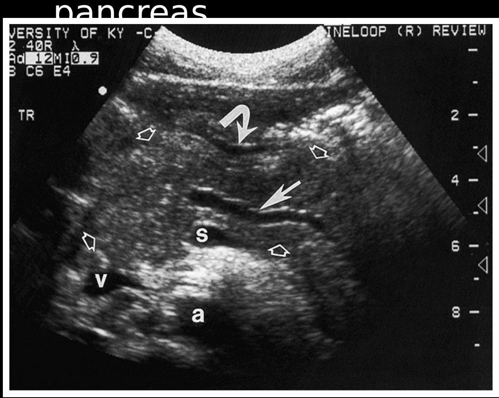Acute pancreatitis
Normal
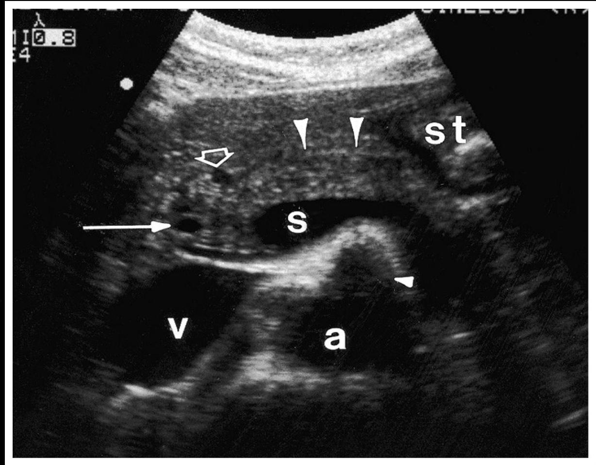Raised hemidiaphragm - >80%
Basal consolidation - 70%
Pleural effusion - 60%
Decreased diaphragmatic movement - Normal mean excursion in deep inspiration is R: 5 cm, L: 4 cm. Exp. Film 1/3 E/factors
Subphrenic abscess = commonest cause of a unilateral pleural effusion in a postlaparatomy patient
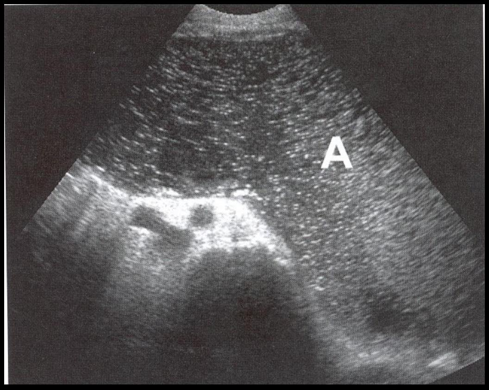Mid Abdominal Abscess With Internal Debri
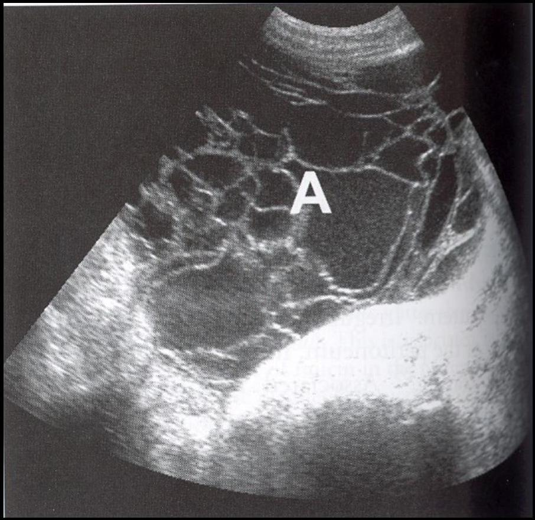RIF Abscess With Septations.
Abdominal abscess walls are usually well-defined but irregular
Renal Colic
Follows acute ureteric obstruction by calculus
Pres/ - colicky pain in flank radiating to groin/ testis - hematuria
70% of calculi impact at the VUJ. The PUJ and pelvic brim are other common sites (WD)
US is sensitive for renal stones >5mm in size.
US + AXR combined will pick 75% of calculi causing colic
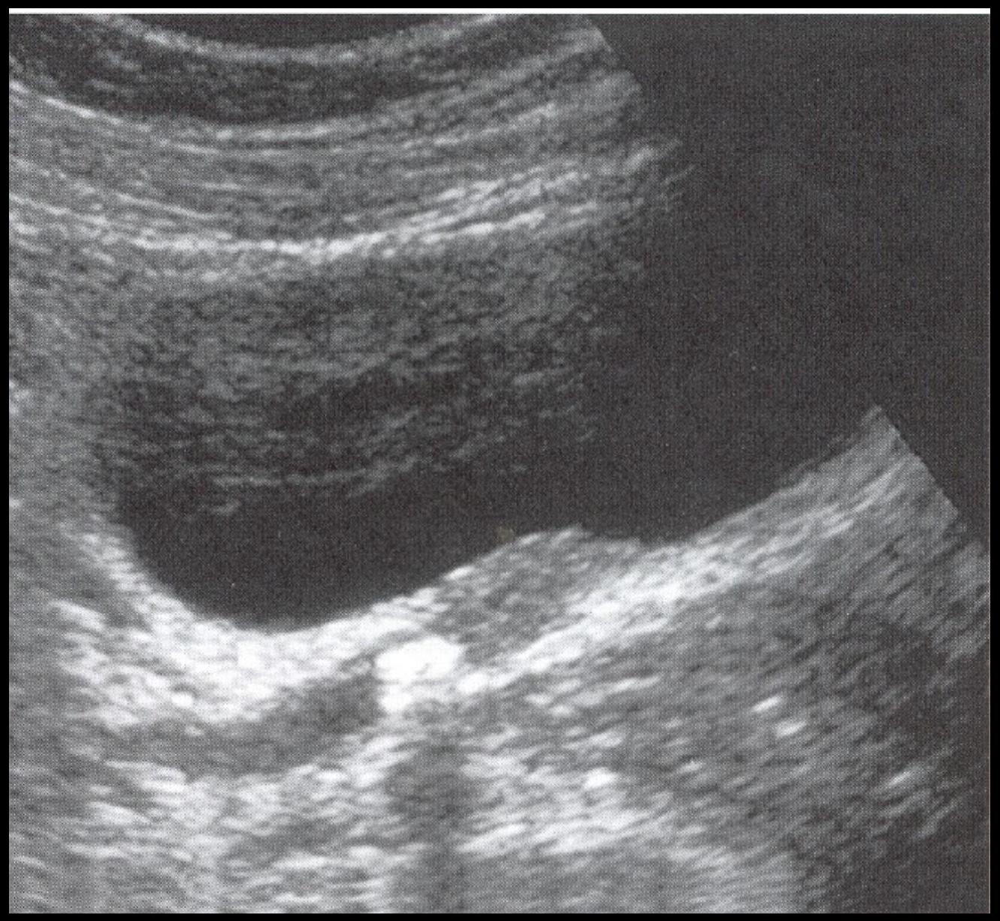Distal Ureteric Stone 1cm From the VUJ With Oedema of Distal Ureteric Mucosa
Ureteric Stones On CT
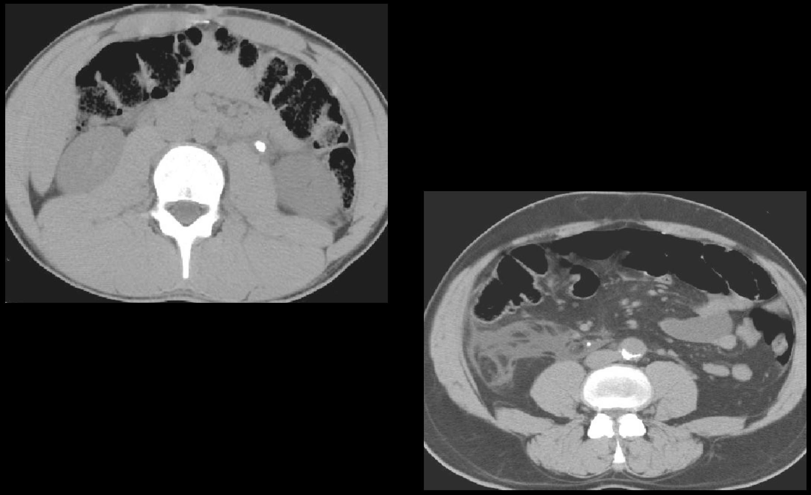 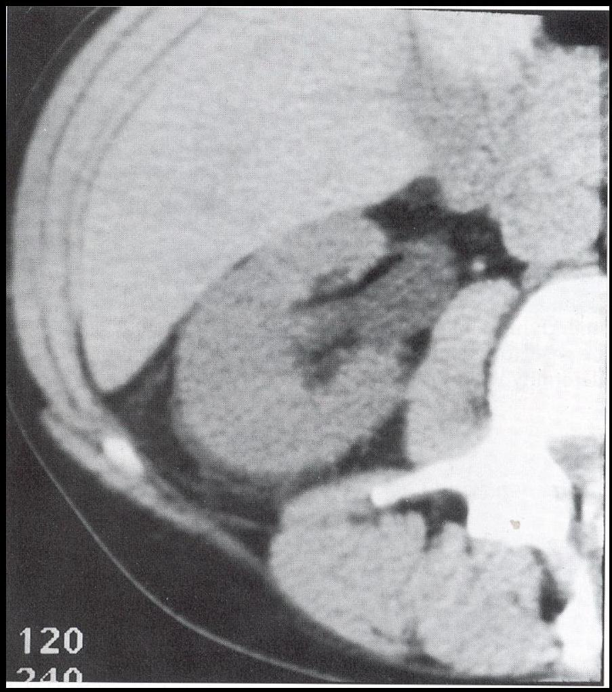Full renal pelvis; perinephric stranding ⇒ moderatey severe obstruction. Recons show dilated ureter and stone causing colic.
Acute Gynae. Conditions
"Ruptured ectopic" may produce a pelvic mass, ileus & free peritoneal fluid. (US is normal in 20% of all ectopics -SC)
Torsion of an ovarian cyst may produce a pelvic mass
Torsion of an ovarian dermoid - calcification, teeth or fat may be seen on AXR
Salphingitis may simulate appendicitis or diverticulitis. It may produce a localised ileus ** US is of particular value in these conditions
Perforated Du
peritonitis